As the LEAD PROGRAMMER for this assignment, I've been tasked with taking the charge on programming our game, dealing with the github and build, as well as making sure the other programmers stay on track!
Below is my development process, detailing what I did, how I contributed to the project, how I did it, and what challenges I faced, updates will be posted on a Sprint-by-Sprint basis
This sprint went really well, I didn't get quite as many points done this sprint as the last ones, but overall I think I got quite a few really cool things done that really set the project apart and made it stand out more as a game. This sprint I got 19 cards done with a total of 21 points, that is 18 one-point cards and 1 three-point cards, which even though is less than my last sprints, I think is still a very respectable number!
The main reason I got less work done this sprint is that I was coordinating my own steam release for another game project that I'm working on! Although despite that I still got quite a few systems done, from the out of bounds system bring a laser down on the player's head, to getting the attack system working, to working on the locomotion graph for our player robot, I got quite a lot done!
I think the thing I am most proud of this sprint was the out of bounds event, once you step out of bounds, it gives the player a warning to turn back, and then if they don't, it will place a spinning target at their feet before shooting them with a giant orbital laser a few seconds later, it came out really well and I must say I am incredibly proud of it, it's something that not all players are going to encounter, but it is definitely really fun and I really enjoyed programming it!
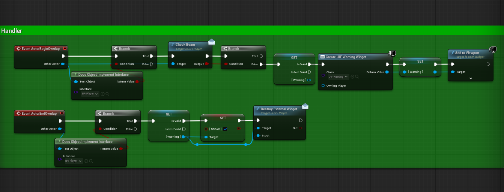
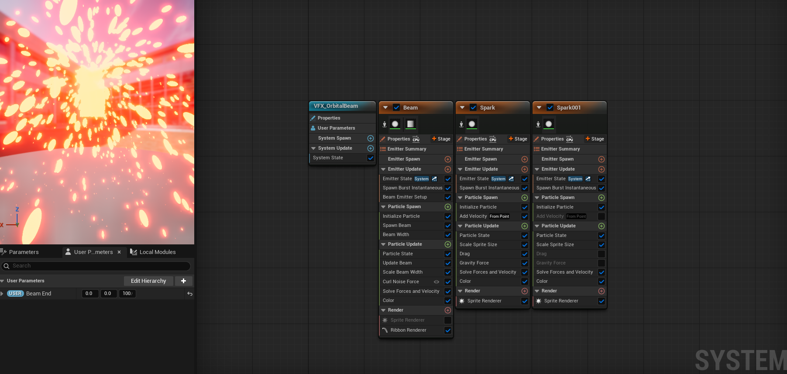
Another important thing I worked on was getting the Animation Blueprint and Locomotion Graph done for the player robot, this was more towards the end of the sprint since I didn't get the rig for the player robot until the Tuesday right before the sprint end, which only left me about one day to do it, but it still turned out really well despite that, with me managing to get the slot + bone blending as well as the entire state machine locomotion graph set up in a relatively short amount of time all things considered'
Since I don't yet have any animations to work with, all I have is the state machine locomotion graph, which contains some more important states but doesn't contain things like attacks and tilts / dodging, since those won't be states but instead'
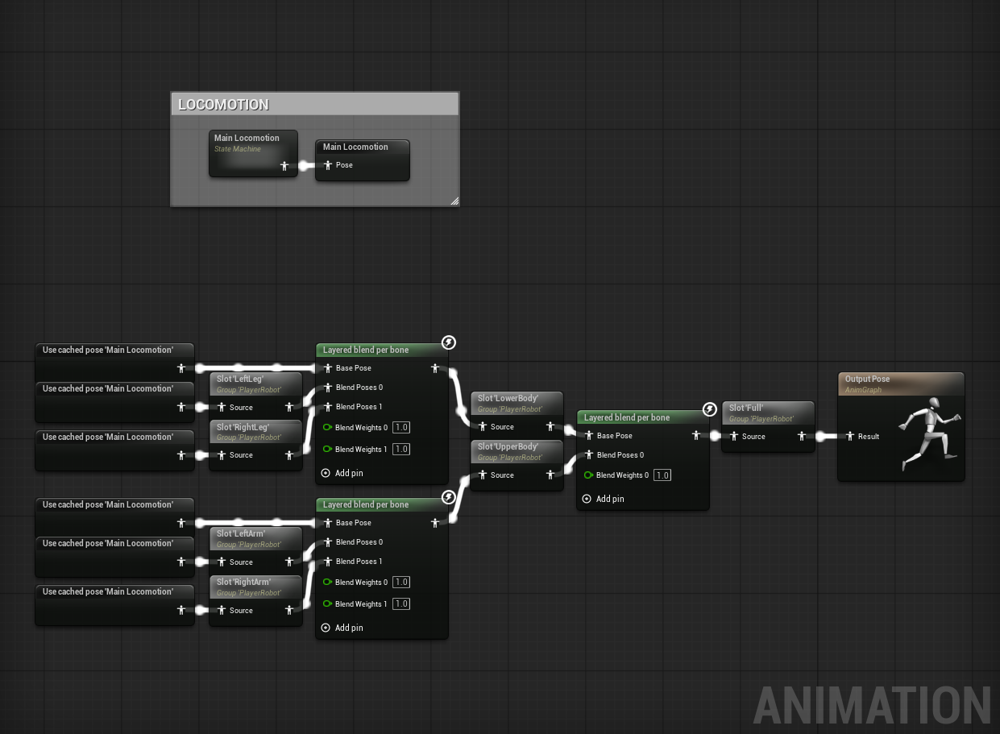
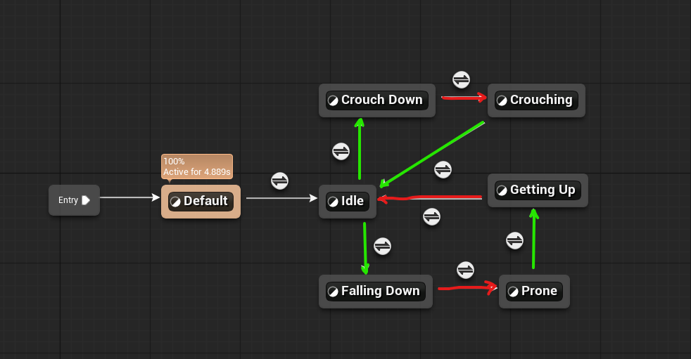
In the image above you can see multiple different colored arrows, these help my designer destinquish between the two types of state changes, the green arrows represent state changes that require a change, since as in a boolean or an enum, while the red arrows represent auto state changes, which take place after the previous state runs through once!
the other large system I worked on was finally getting the robot attacks working, while this system doesn't yet look super good since at the end of the day, the most satisfying part of combat comes with the animations and the effects that go along with it (Hit rumble, freeze-frame, etc. Which I'll be adding once I get the animations), I got the backend and overall function of the robot combat working, which wasn't too difficult.
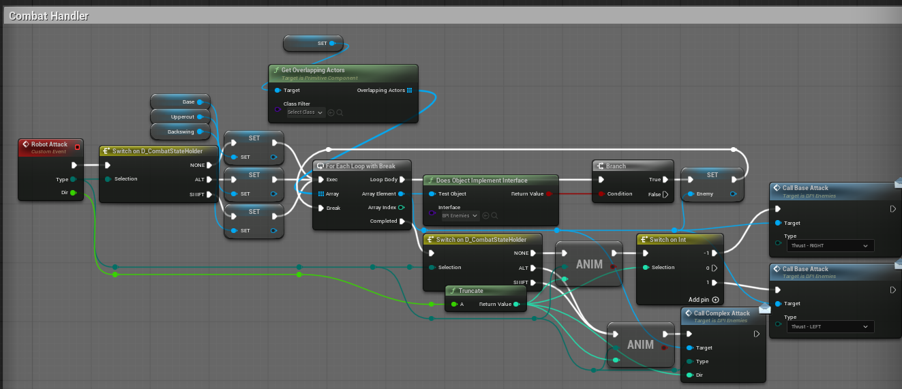
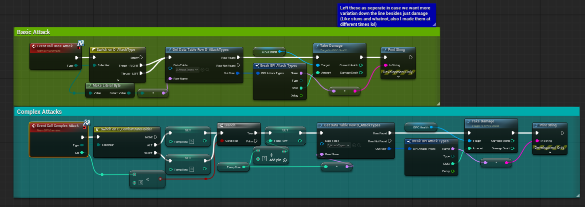
Overall I think I had a very good and productive sprint where I not only learned a little bit more about particles but also made some food systems that I am very proud of, as well as laying lots of back end groundwork for systems to come such as our robot's animations!
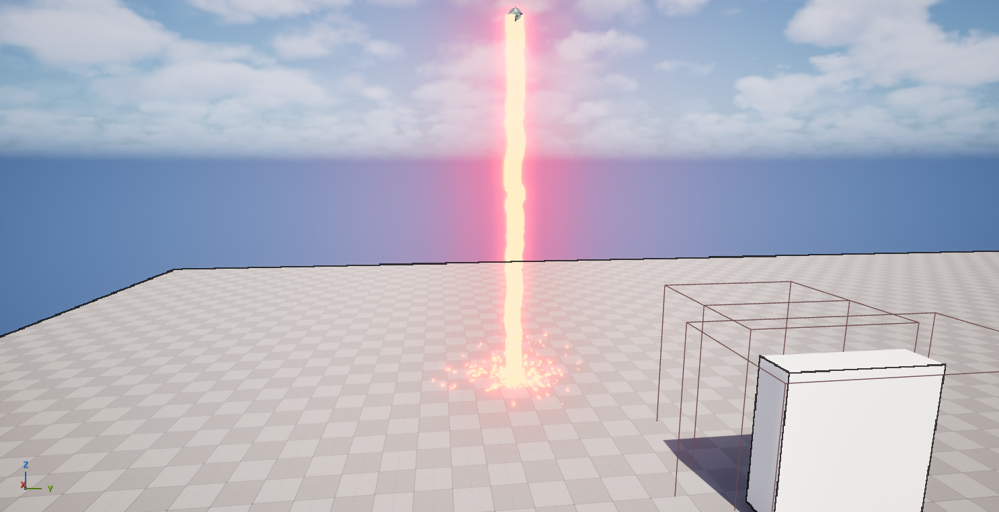
This sprint went fairly well, considering I wasn't able to work on any cards for the first weekend thanks to partaking in a Game Jam. This sprint I got 30 cards done for a total of 32 points, 29 1 point cards and 1 three point card, which I think is pretty good, it isn't quite as good as last sprint, but that is to be expected as we get farther in development.
I worked on quite a few things over this sprint, the first was getting as many of the upgrades actually working as possible with how many systems we've gotten done so far, which includes also translating the existing system into the ability to have both permanent and temporary upgrades, which was my three point card, it proved difficult but also not AS difficult as I assumed it would have been!
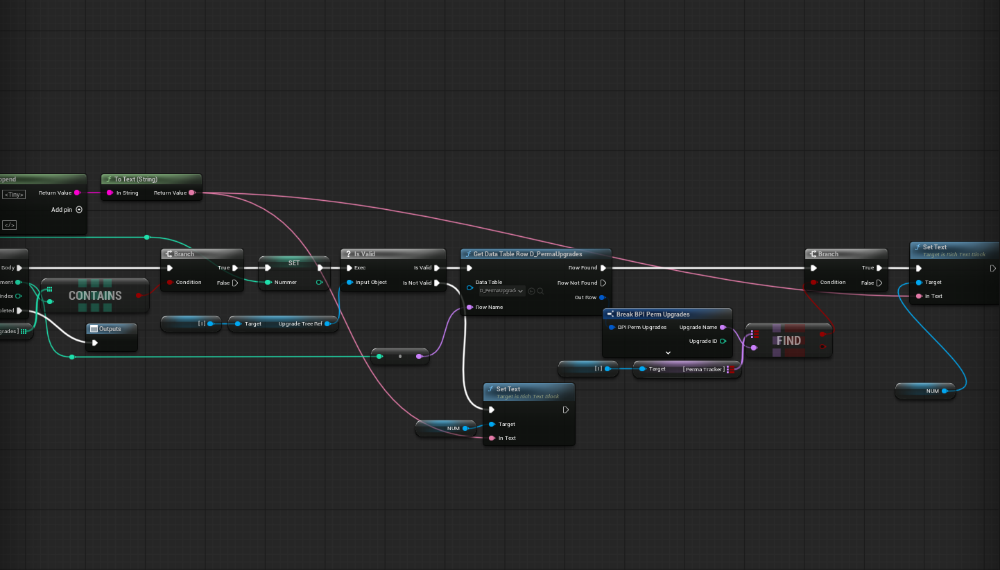
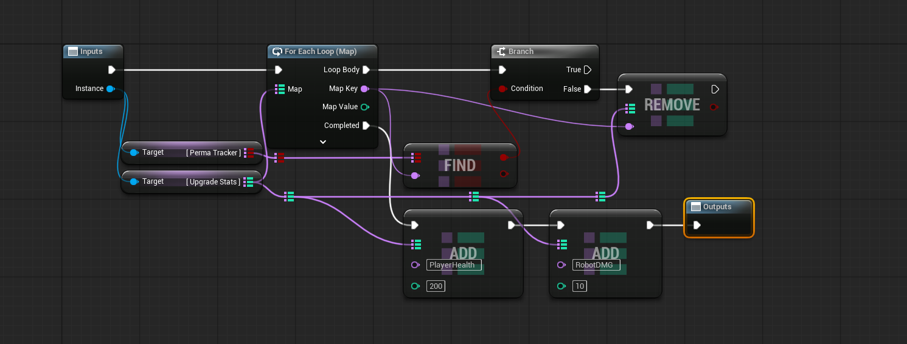
One big problem we encountered during this sprint was we learned that we actually can't only have controller imputs as I was previously told, and we are actually required by our executive producer to have keyboard inputs as well, which was a bit of a problem since many of my systems were programmed with the idea of exclusively controller in mind. My lead designr also requested that only one could be used at a time and required changing in the settings, so I had not only add support for switching between movement sets, but also fix existing systems so that both controls would work for them!
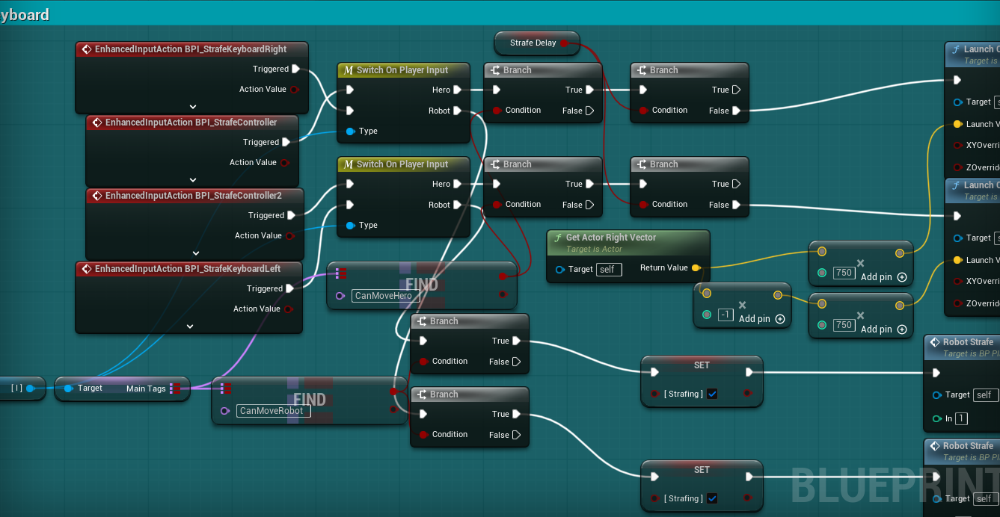
The last major system I worked on was getting started on player / enemy detection and combat, this included allowing the player robot to actually detect enemies in front of them as well as allowing them to attack the enemy, I only managed to get the basic attack working before I had to move over to working on the controls in the later, for this I used interfaces and overlap volumes to detect enemies in front of you and deal damage!
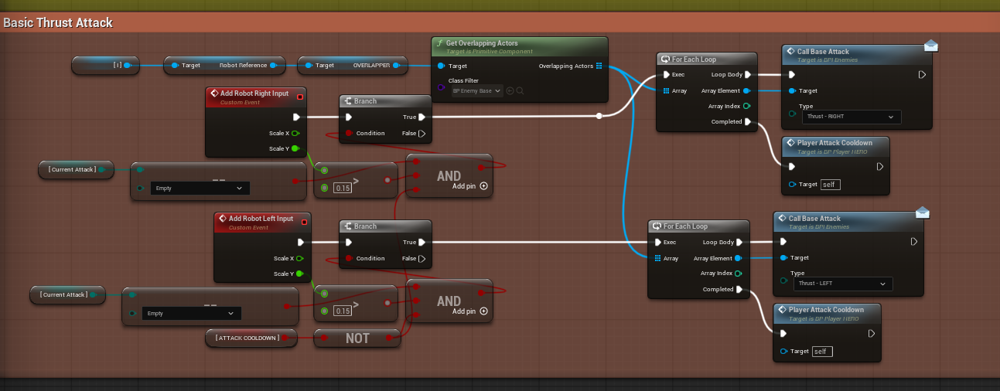
This sprint may not have been as crazy and glamorous as the last sprint, but I still got a lot of points done and was more than happy with how a lot of the systems came out, and I know I'll be able to do even better next sprint when I have more time, and overrall, I'm really happy with how much I managed to get done working on both this project and a Game Jam!
Althought this was only our first sprint, a point where many people like to take their time and get their projects off of the ground, I was determined to make sure me and my team didn't get lazy, so I hit the ground running right away. This sprint I completely 35 cards, all of which were 1 point, and I got quite a lot done in the project to show this!
The first thing I worked on after getting the github and unreal project created was player movement. In the design for this game, the player has to control their robot from outside of the mech, so the controller for the player was incredibly important, I wanted it to have lots of movement options for getting around, and I think nothing shows this off better than how I programmed the rocket boost!
As you can see in the video above, we decided to make the movement system rather fast paced to accout for how the player will be jumping around from building to building to get a good angel for controlling the robot, which I think the strafing definitely helps with, espeically since I made it possible to do mid air, which'll allow the player to use them in conjunction with the rocket boosts to get a really cool effect and shooting themselves around the map'
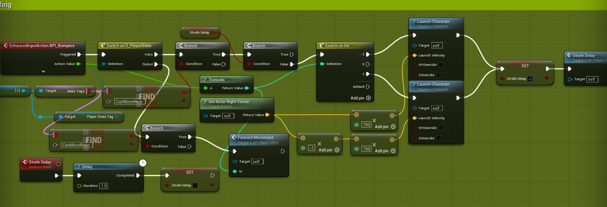
Moving on from the player movement, one of the most important parts about our game is taking control of the robot, so I wanted to make that as seamless as possible, luckily, I'd already perfected a system for smooth camera movements and points from previous projects, making use for a map variable I was able to create a blueprint type for camera locations, get references to every one stored in a map, and then call them using a name at any point, which allows for really easy references to points for easing between!
This camera system makes it really easy for the smooth camera transition from 3rd person player to 1st person robot control, combined with the turning to face the robot and the following them provides a really nice smooth movement that I think looks really good and feels really good!
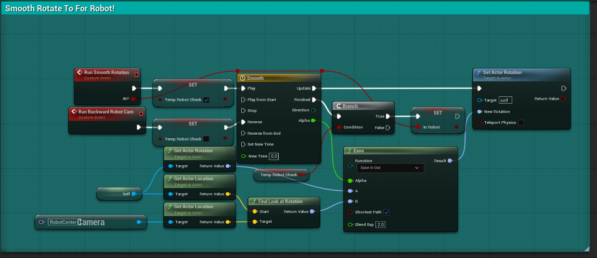
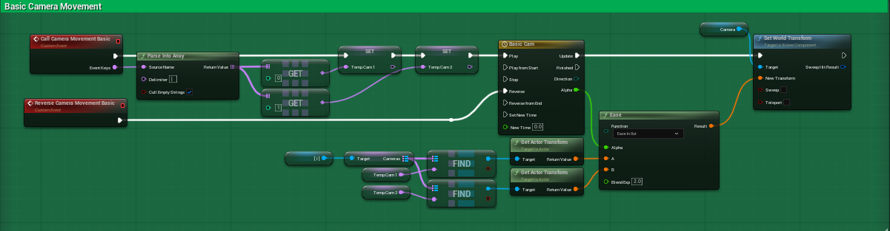
To go along with this, something I had a little bit of trouble with was getting the robot movement working, originally I intended to simply use a regular movement call similar to the player, but I had some trouble getting that working based on how the character movement controller likes to work, so I eventually settled for having movement in tick and turning on a boolean toggle, which I know isn't the best way to go about doing this, but for my use case it worked best and doesn't have any issues!
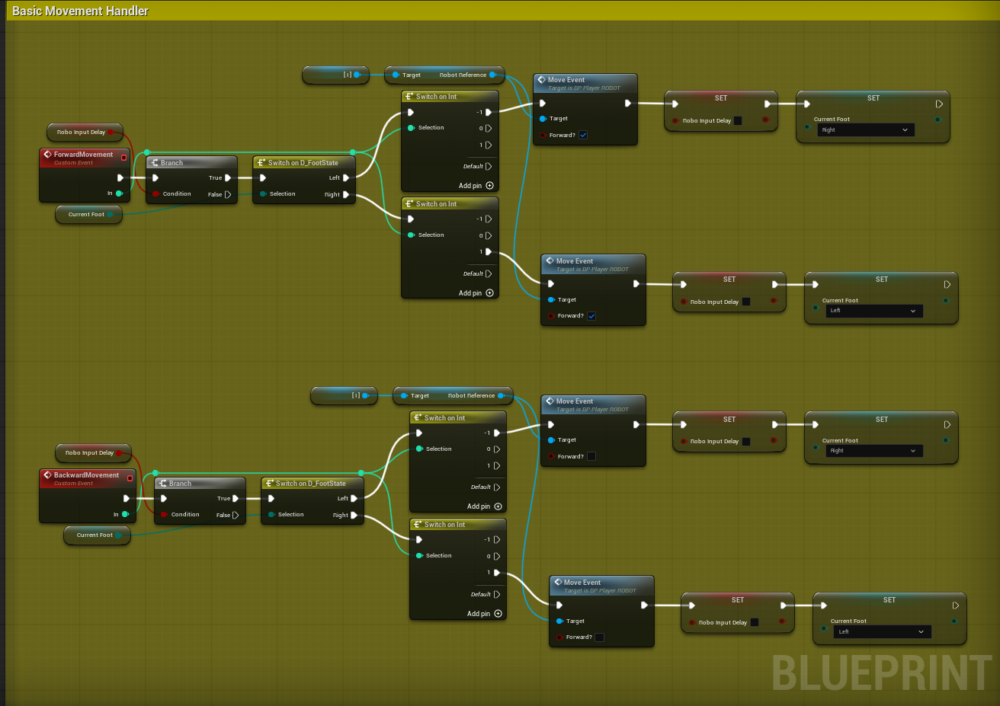
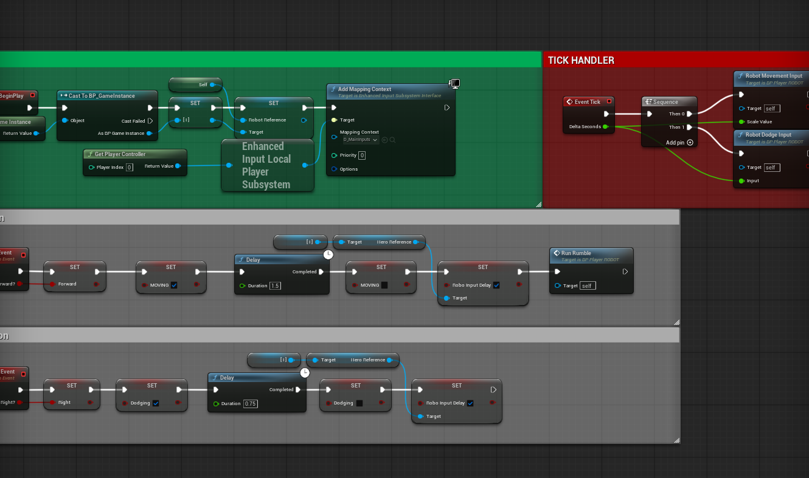
The thing I had probably the most trouble with had to be the upgrade tree system I made, I've made an upgrade tree before for a previous project on mobile, so I figured it'd be pretty similar, but it ended up being quite different and very hard, originally I wanted the cursor to jump between upgrade icons and lock to them, but quickly found that was much too hard and decided to pivot, but then learned that Unreal doesn't natively contain support for detecting Widget overlaps, which I then had to program myself which was quite the challenge, especially with the math involved, but eventually I got it down
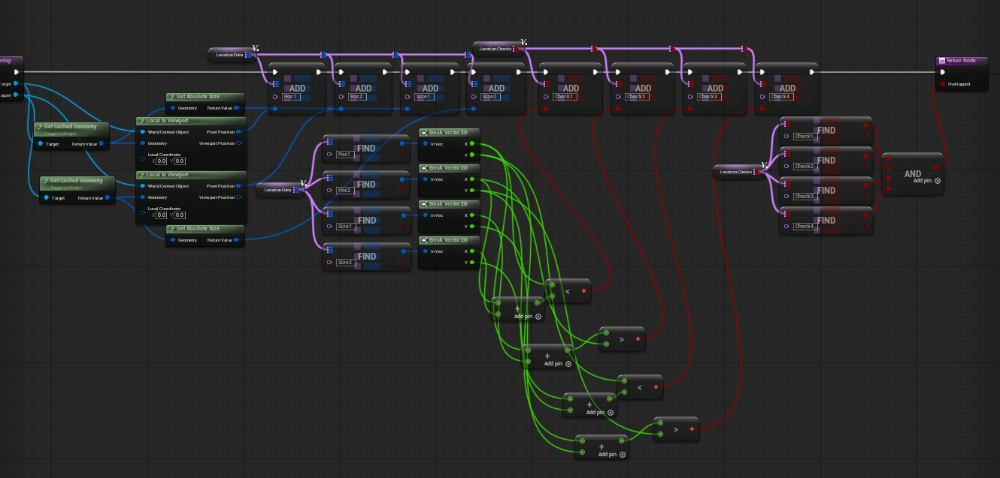
After I got the widget overlap working, I still had a lot of issues with actually getting a references to WHICH widget you were overlapping, overall, I think the upgrade tree as a system took me longer than all of the other systems I worked on this sprint combined, it took a long time to deal with all of the issues that popped up, but eventually I found a workaround that was perfect for our use case and works perfect every single time with no bugs, and I think I'm really happy with how it turned out! (Mind the Programmer Art!)
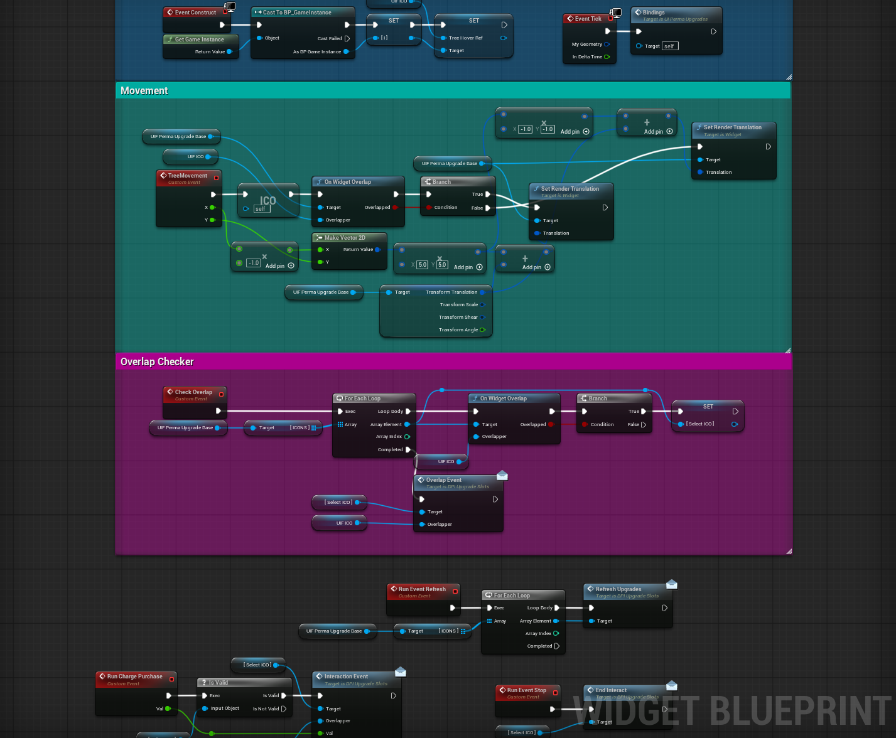
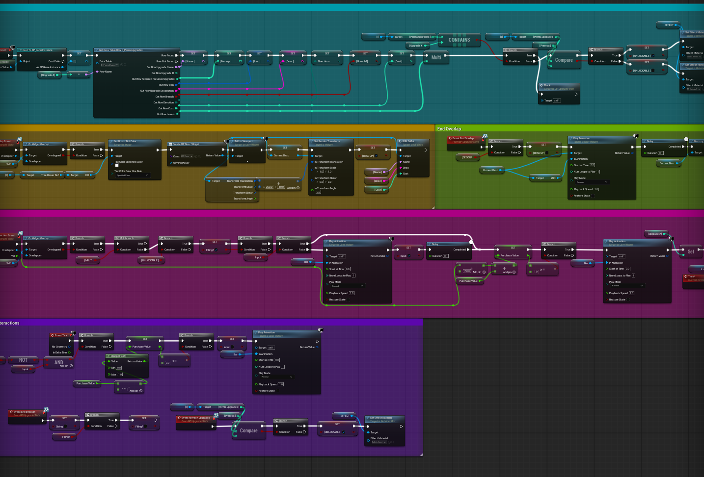
Overall, I think this was a fnatastic first sprint, I think 35 Points was a great first start but I really want to try and hit an even higher point count as I think I can do even better!